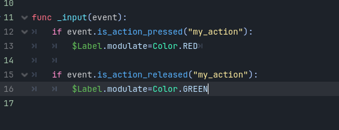
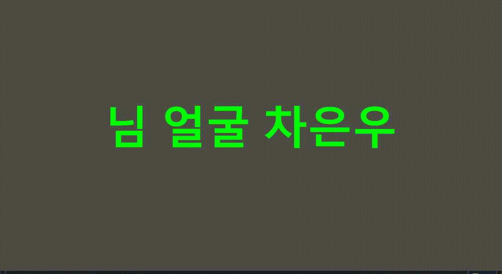

고도 GDScripts 튜토리얼15

뭘할거냐면 입력 버튼을 눌렀을 때와 누르고 땠을 때의 처리를 해볼거임!
저렇게 코드를 작성해줘!
func _input(event):
if event.is_action_pressed("my_action"):
$Label.modulate=Color.RED
if event.is_action_released("my_action"):
$Label.modulate=Color.GREEN
주의! 들여쓰기 지켜야함!모르겠으면 밑에 가서 공부하고와!
코드도장_들여쓰기

그럼 버튼 누를 때와 버튼누른상태에서 땔 때 초기화된 색깔로 바뀜
버튼을 누르세요!